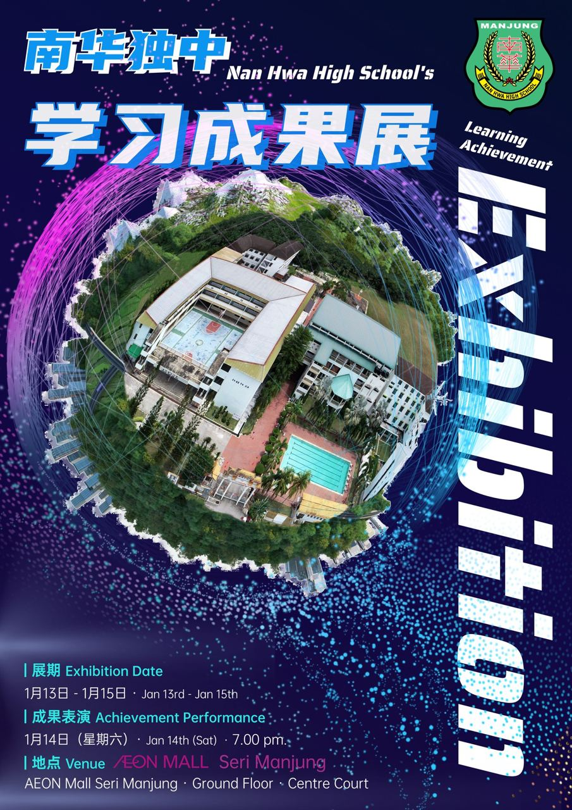
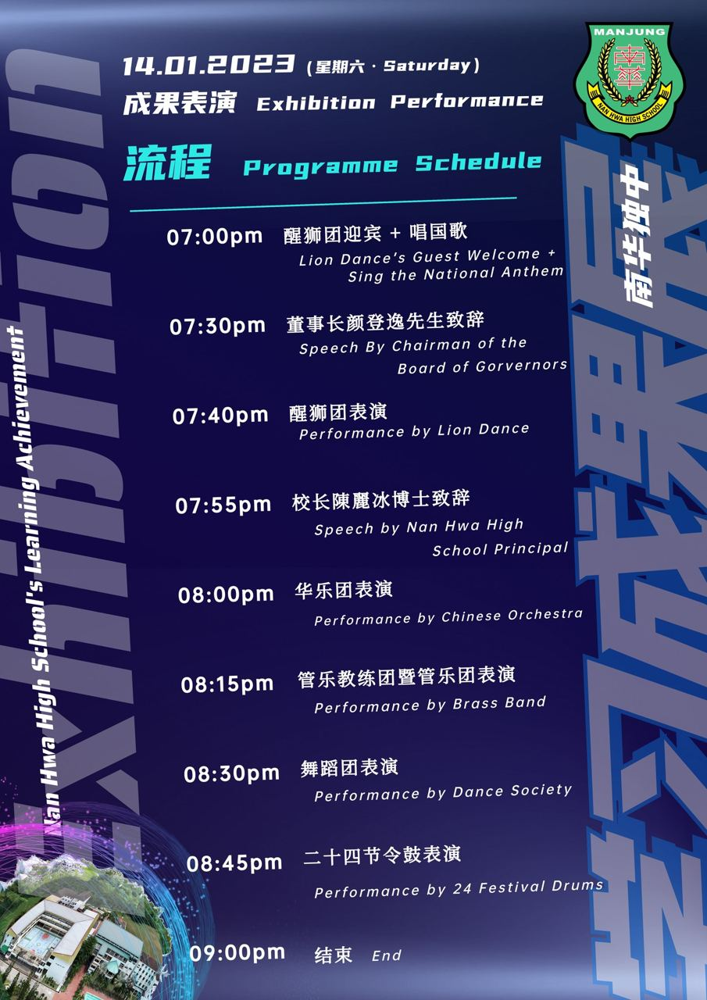
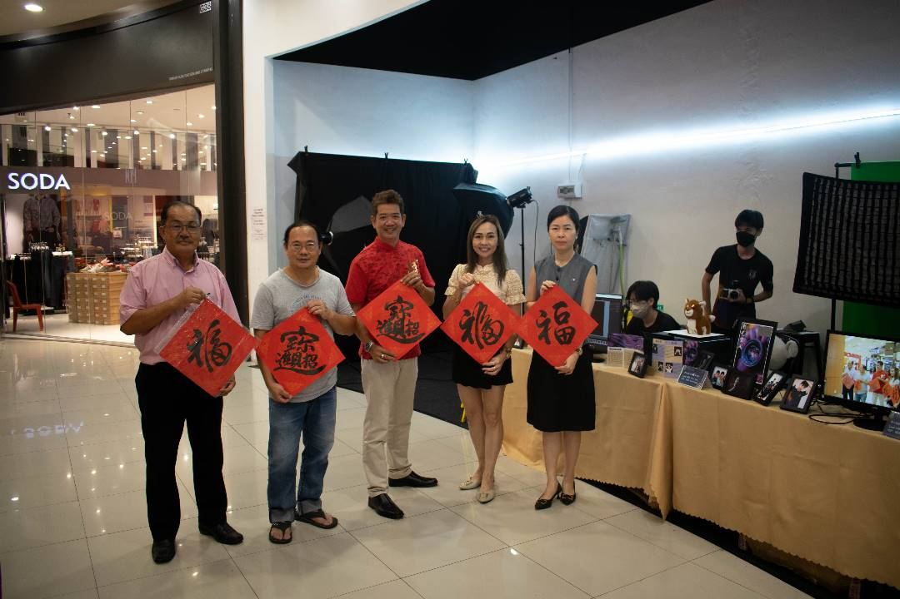
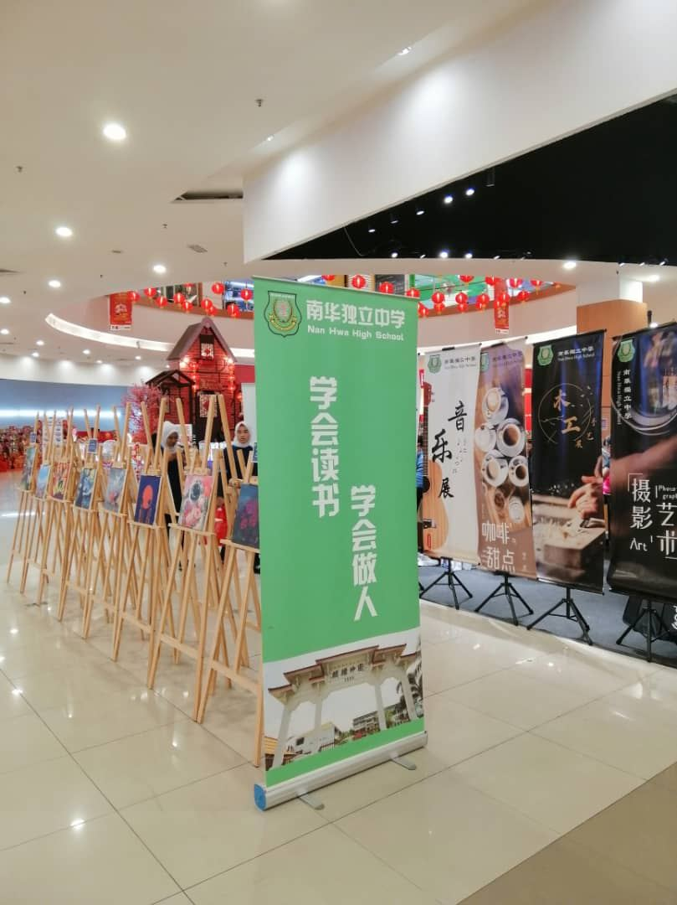
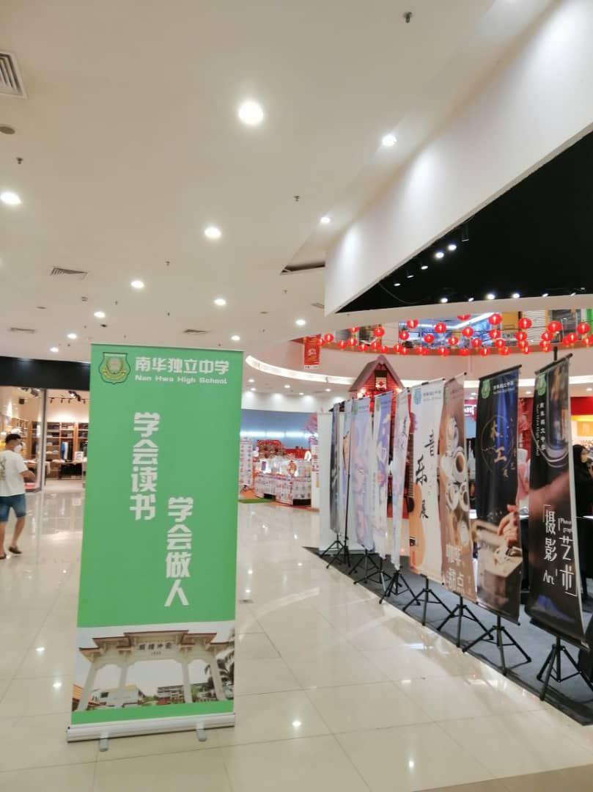
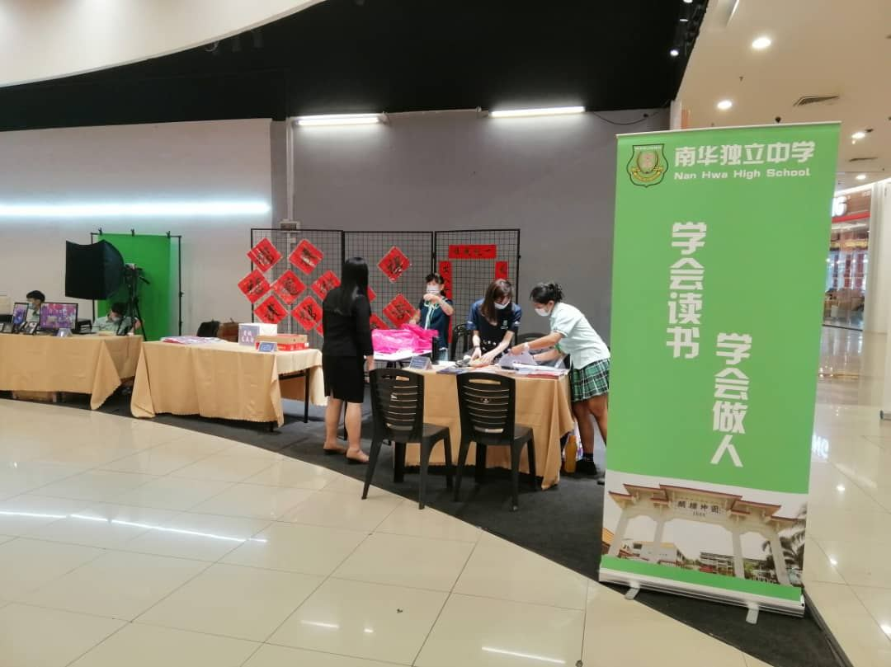
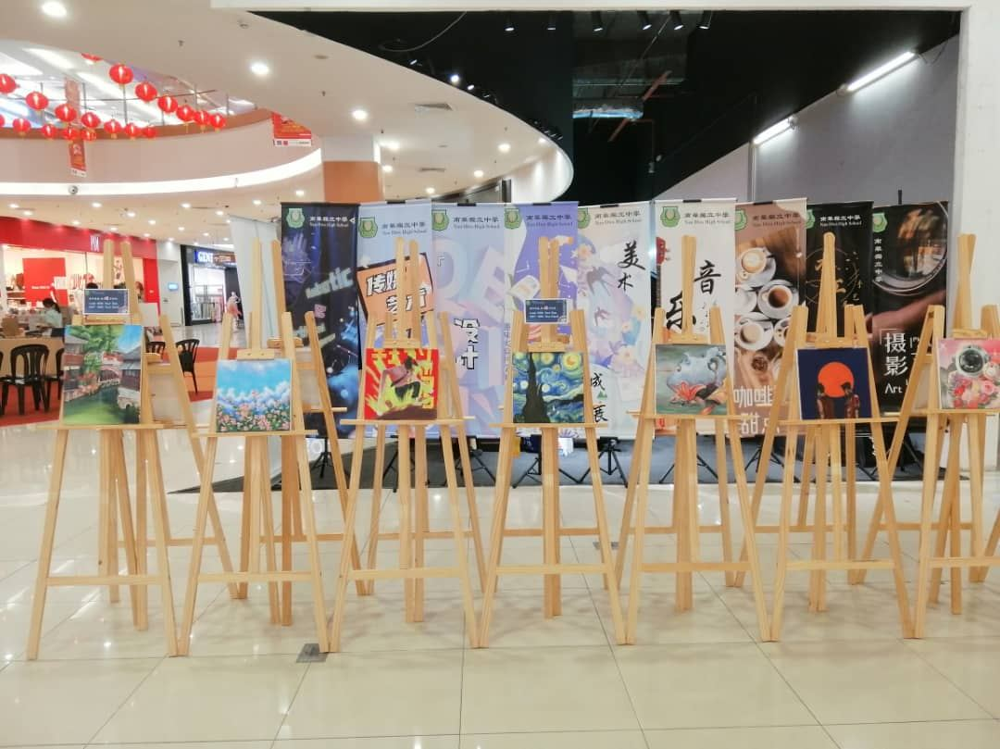

【南华学习成果展】
【南华学习成果展】
【AEON Mall Seri Manjung】
【首日总结】
学习的场域，从来不必限于教室之内、校园之中。
只要是孩子成长的地方，那就是学习的殿堂。
看着南华独中的孩子从懵懂无知、羞答生涩地踏入被陌生人围绕的AEON广场，渐渐进步至勇于主动搭讪、四处派发传单、跃跃欲试地和社会民众讲解“南华，是一所教会我们‘学会读书·学会做人’的南华。” 偶有几句不成熟的发言、不确定的数据、不清晰的口齿，但自信说出了自己的看法，那即是孩子弥足珍贵的成长！
第一天结束；带着错误累累却越战越勇的精神，明天即将迎来次日。
仅有三天的南华独中学习成果展，即将迎来明天的重头戏：【互动成果展】
试吃试喝的咖啡与甜点艺术；
师生合奏的迷你音乐会；
自行搭建与操控足球机器人；
艺术气息浓厚的美术与广告设计；
免费体验灯光人像艺术摄影；
迷你降落伞趣味科学实验；
木工手艺制作与竹子舞；
【成果表演展】
晚间7点开始：醒狮团、华乐团、管乐团、舞蹈团与二十四节令鼓。
AEON Mall Seri Manjug Centre Court
约定你，不见不散！
#学习成果展 #互动成果展
#南华独中 #实兆远 #曼绒







